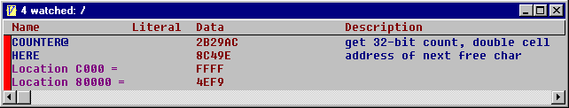

Watch Window
The watch window monitors data on the target board, and it updates itself as often as the debugger link will permit. It can call any Forth word with a known data type. A word can be assigned a data type with the DATATYPE directive.
A word with an associated data type can be added to the watch window by clicking on its datatype field in the token browser window. In the example below, I clicked on the datatype fields of COUNTER@ and HERE.

Forth word watching:
| ADDWATCH | ( <name> -- ) | Adds a word to the watch list |
| CLEARWATCH | ( -- ) | Clears the watch list |
Generic memory watching:
| WATCHDATA" | ( addr format string" -- ) | Adds watch parameter for data memory |
| WATCHCODE" | ( addr format string" -- ) | Adds watch parameter for code memory |
| WATCHREG" | ( addr format string" -- ) | Adds watch parameter for register space |
| WATCHEE" | ( addr format string" -- ) | Adds watch parameter for EEPROM |
| CLEARWATCH | ( -- ) | Clears the watch list |
Addr = address of data to watch
Format is two bytes: the upper byte is the display format and the lower byte is the byte count.
| Formats: | |
| 0 | byte value |
| 1 | 16-bit little-endian |
| 2 | 16-bit big-endian |
| 3 | 32-bit little-endian |
| 4 | 32-bit big-endian |
| 5 | ASCII |
Example: 0xC000 0x102 WATCHDATA" Location C000 = "
adds an item to the watch list that fetches 2 bytes from data
memory location
0xC000 and displays the data as a 16-bit little-endian number.